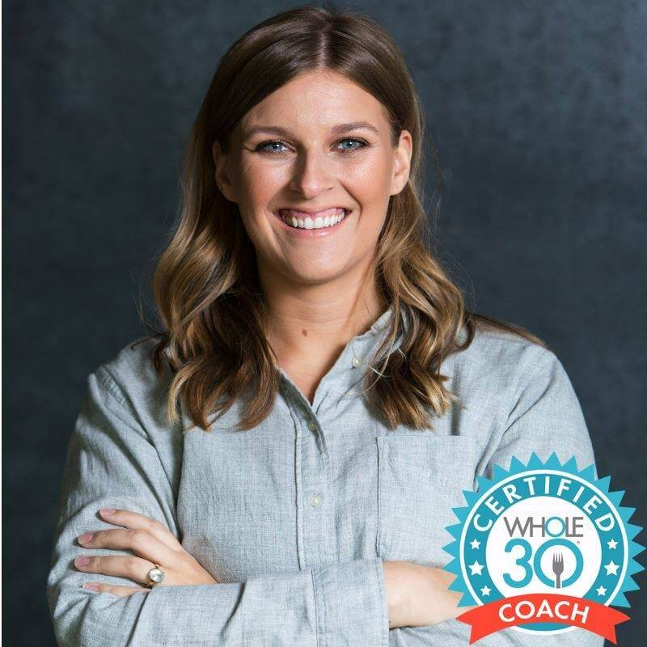

Um mig

Hæ, ég heiti Sigga Bára Ingadóttir og er með viðurkennda vottun sem Whole30 þjálfari.
Whole30 gengur út á að ákveðnir matarflokkar eru teknir út í þrjátíu daga og svo kynntir inn kerfisbundið að þeim tíma liðnum.
Á þessum þrjátíu dögum sleppir fólk því að borða kornvörur, sykur, mjólkurvörur og belgjurtir og auk þess neytir það ekki áfengis.
Ég kynntist Whole30 fyrst óformlega þegar ég æfði CrossFit fyrir sex árum en mér fannst það ekki henta mér þá.
Það var svo ekki fyrr en ég las bók sem heitir Food Freedom Forever sem er eftir einn af höfundum Whole30 að ég fór að kynna mér prógrammið betur.
Eftir lestur bókarinnar áttaði ég mig á því hvað matur hefur mikil áhrif á mig. Í raun snýst allt lífið um mat.
Við erum sífellt að spá í hvað eigi að vera í matinn, við gleðjumst með mat og syrgjum með mat.
Þegar við hittum vini og fjölskyldu kemur matur yfirleitt við sögu. Með Whole30 er hægt að komast að því hvaða mataræði hentar hverjum og einum best, bæði líkamlega og andlega.
Whole30 gerir fólk meðvitaðra um hvaðan maturinn sem það borðar kemur og ekki síst innihaldsefni matvæla en það er t.d. ótrúlegt hversu mikið er um sykur og sætuefni í matvörum.
Fyrir mér er Whole30 gott tæki til að núllstilla sig og ég nota það til að ná betri stjórn á mínum matarvenjum. Ef mér finnst mataræðið komið út í vitleysu tek ég fjóra, fimm daga á Whole30 til að koma mér á rétta braut aftur.
Þetta er ekki lífstíðarkúr heldur leið til að koma manni í rétta hugafarið varðandi mataræðið.
Einkunnarorð Whole30 eru: Endurræstu heilsuna, venjur og samband þitt við mat.
Whole30
Hafðu samband
Endilega sendu mér póst ef þú vilt fá frekari upplýsingar um þjálfun sigga90@gmail.com